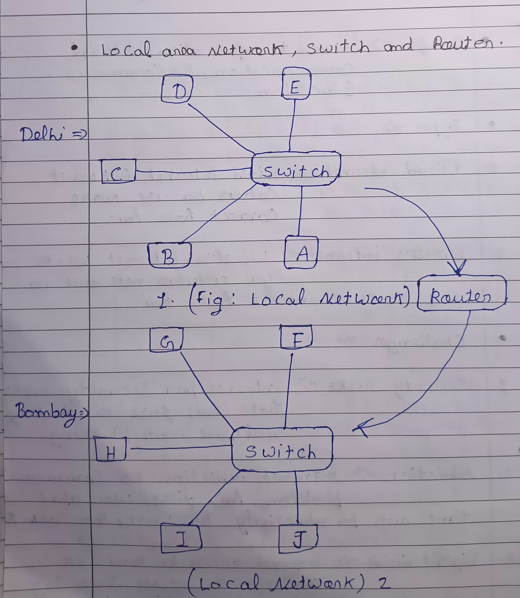
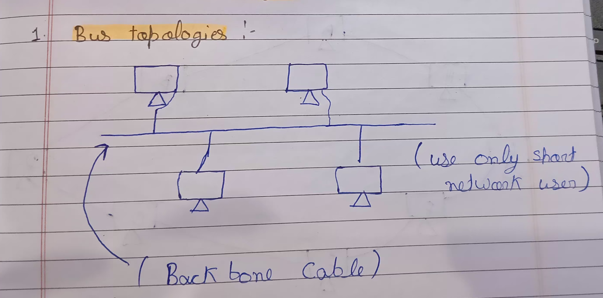
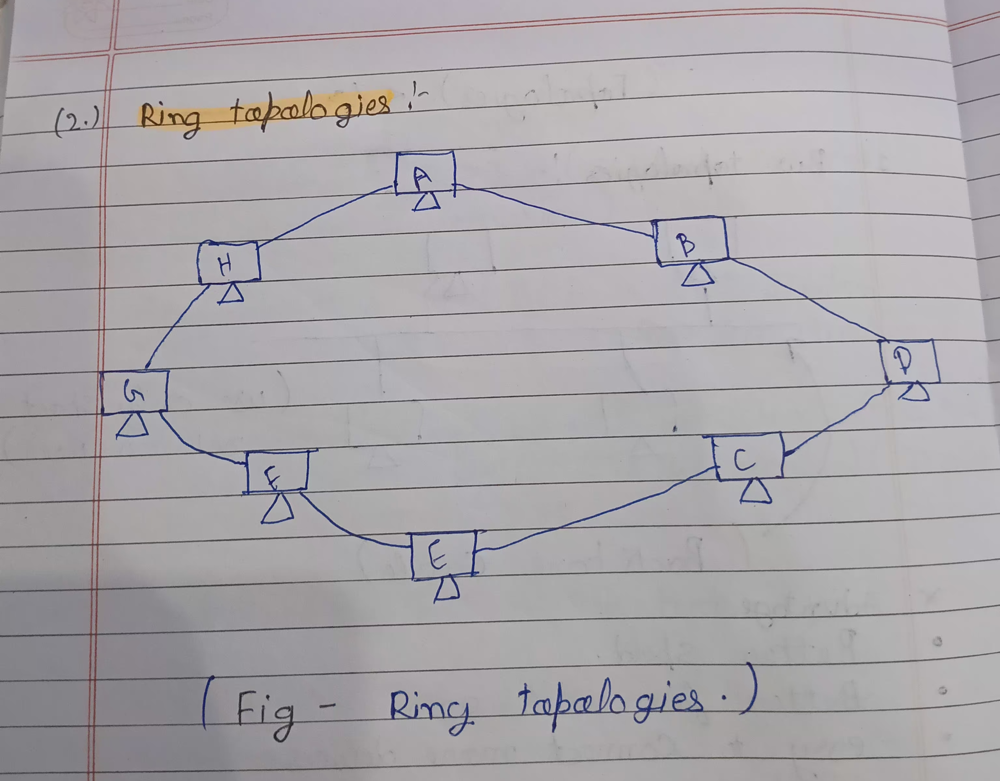
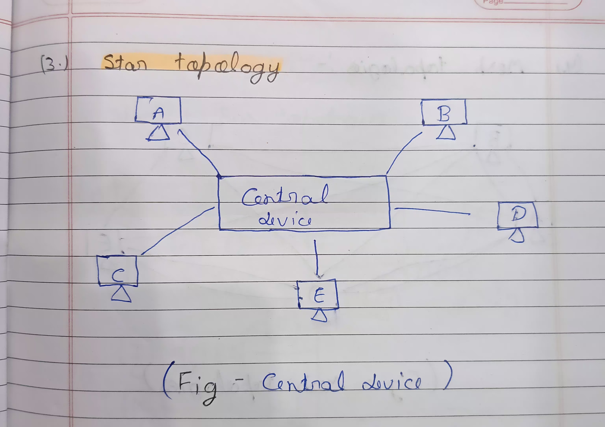
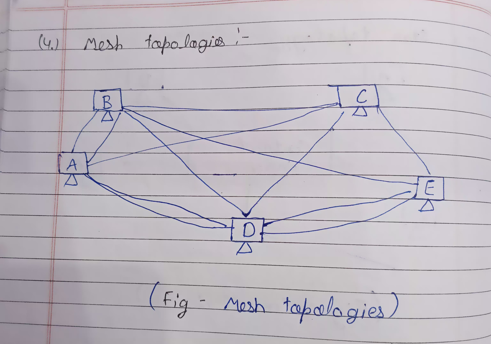
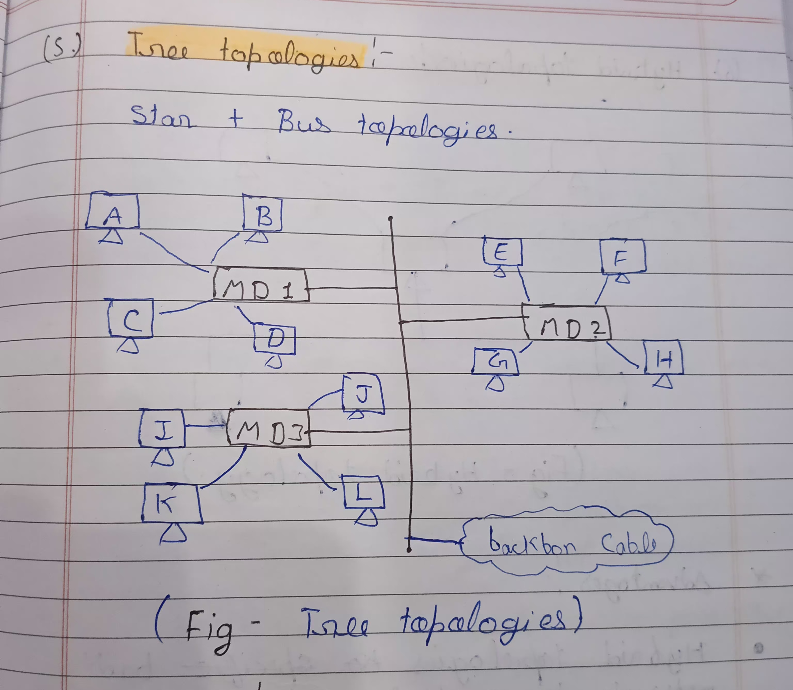
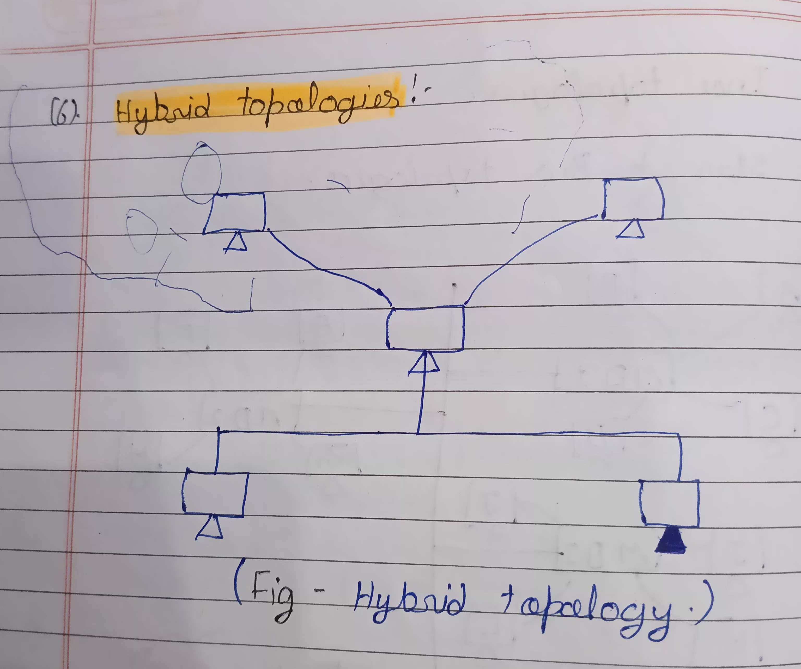
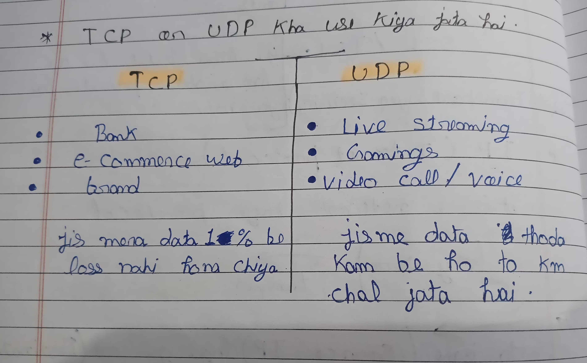

[COMPUTER NETWORK]
*Definition:-
-
Ek system jisme computers aur devices connected hote hain, taaki wo
communication aur resource sharing kar saken.
*Type of network:-
- LAN (Local Area Network) - chhote area jaise office, school.
- MAN (Metropolitan Area Network) – city level network.
- WAN (Wide Area Network) – worldwide (example: Internet).
-
PAN (Personal Area Network) – personal devices jaise Bluetooth, Hotspot.
* Components:-
- Nodes (Devices) → Computer, Printer, Server
- Transmission Media → Cable, Wi-Fi
- Networking Devices → Router, Switch, Hub, Modem
* Router:-
-
Router ek networking device hai jo multiple networks ko connect karta
hai aur data packets ko best path se forward karta hai. Sabse common
example: Home Wi-Fi router jo aapke local network (mobile, laptop, PC)
ko Internet se connect karta hai.

Example:
-
Aapka mobile → Wi-Fi Router → ISP → Internet (Google, YouTube, etc.)
-
Agar router na ho to aapka local network Internet ko access nahi kar
paayega.
* Components of Data Communication:-
- Senden: Initiates the message.
- Receiver: Grets the message
- Message: Information being communicated.
-
Medium: channel through which the message travels (e.g., Cables, air).
- Protocal: Rules governing data communicatio
* Distributed processing:-
-
Definition: Multiple computers / Processors work together to complets
task.
-
Benefits: Improved performance, resource Sharing, and fault talerance.
* Standards and anganizations. :-
-
Standands: Agreld - upon specifications far Communication pratocals (eg,
IEEE, ISO).
- JEEE = > (institute of electrical and electronics. Enginners.)
ISO = > (International, organizata Standardization)
* (IP Address and Port number ) :- very important
- IP Full name = > IPTV (Internet, pratical, Television).
- The Combinations of (IP v4) is 4.3 Billion (32) Bit Number
- IPv4: 32 Bit = 0.0.0.0 -->255.255.255.255 (-.-.-.-)
The combinations of (IP V6) is 3.4 x 10 ki power 38 = 34 ka bad 37 zeros
(128 Bit number )
PORT Number: 65,535.
0 - 1023 = > System Ports. etc.
1024 - 49,151 = > applications Parts etc.
49,151 - 65,535 = > Temparary Ports:
DNS (Domain, name, system)
DNS => like a your Phonebook to learn your IP address. Provide by ICANN
(internet, Crospanation, assigned Name and numbers.) Non profitabl
anginization.
Topologies
1 Bus Topologies

*Advntages
- Better speed
- Better for small areas
- Easy to connect more devices
* disadvntages
- Full dependansi on backbone cable
-
Ek devise jada network consume karaga to baki ka devise slowe perform
kranga
2 Ring Topologies

*Advntages
- Benifite to fast data transfer
- Cost effective low bugate
- Fast speed
* disadvntages
- Compliactide to connect more devices.
- Security Consune
-
Data transfer to A to D device to access data in A,B,C,D all devices
3 Star Topologies

*Advntages
- Simple to connect more device
- Sabse jada Security isma hi hoti hai.
-
Better speed performance croupt one device to not effect all divices.
* disadvntages
- Costly to use.
- Central fail to effect all device
4 Mesh Topologies

*Advntages
- Very fast data transfer.
- Speed to working process.
- Easy to replace device.
- Not loss data.
* disadvntages
- Very costly to use.
- Deficult to connect more devices.
5 Tree Topologies / star + bus Topologies combinations

*Advntages
- Usesise to big startup.
- Curept one MD to effect in one MD not all MD
* disadvntages
- Costly to use.
- Full dependansi in backbone cable.
6 Hybrid Topologies

*Advntages
- Hubrid Topologies badi network ko sambhalne mein saksham hai.
-
Hybrid Topologies mein agar ek hisa fail ho jata h to dusre hisa aabhi
be kaam kar sakta hai.
* disadvntages
- Hybrid Topologies ko design aur lagu karna muskil ho sakta hai.
OSI model
(OSI => open system interconnection model)
(7 layers )
7. Application layer
-
protocols hota hai jaisa HTTP , SMTP , FTP application layer working for
HTTP request recive krna
summary => application layer mera jo website hai usko usisa connect karna
ka kaam karti hai
6. Presentation layer
(i) translation layer.
(ii)Compression layer.
(iii)Encryption layer.
- HTTPS mein jo (S) hai usko presentation layer banati hai
summary => jo mera pass data aaya hai usko achi traha se present karna
5. Session layer
-
i am order piza to lapinoz to create session( sender -> reciever)
checkpoints banata hai.
Example:
-
2GB File downloade (start 0%-------|------100%) 0% or 100% ka beech me
jo symbol hai wo session layer hai
summary => session layer ka kaam hai chackpoint banana hmna 2GB ki file
downloade pr lagai or agar bich me network essu hua to session layer jaha
tak be hmari file downloade huai hai vaha wo checkpoints laga daga use
baad jab dubara file downloade par lagagi to file wahi se downloade hona
suru ho jayegi
protocols => Net BIOS (basic input output system)
RPC => (Remote procession call)
PPTP => (point to point terniling protocall)
4. Transport layer
-
Sigmantation:
-
iska matlab hai data ko packets ka form me todna or pachan dena
-
siquencing:
- 1/11,2/11 boxs me dal diya
-
Acknoligement:
- Macksure karna ke sara packet delever ho gya hai ya nahi.
Example:
-
hmna packets bheja or usme sa (5)no. ka packet rah gya to Acknoligement
usko dubara bheja ga.(Resend)
protocols => TCP,UDP
TCP => Transmission , control , protocol.
UDP => User , datagram , protocol
3. network layer
- iska km hai data ko bhjena
Routing:
- uska radi karna aaga bhjena
IP Assign
- ya hma public ip provide karta hisap
summary => jaisa google map kaam karta hai
2. Data link layer
-
iska kaam hai ap ke IP ka use krke MAC tak pauchana jaise flot no. 202
ke
summary => iska kaam hai ap ko asset location par pauchana.
1. Physical layer
-
iska kaam hai ap ka jo data aya hai usko (bits) me convert karna 0,1 ke
form me.
HTTP OR HTTPS
ports of HTTP and HTTPS
- HTTP => 80 PRTS
- HTTPS => 443 PRTS
SSL/TSL :
- ya hma batata hai ke hmra data private hai ya nahi
SSL => secure sockets layer.
TSL => Transport layer security.
IP Internet protocol
IP =>
- it is a network layer protocol
Example: my correr transfer
- TO isme (source IP) laga ga or (Destination IP ) laga ga
Source IP:
-
Agar app apne browser mein kisi website ko open karte hai toh aapke
device ki ip address source ip address hogi.
Destination IP :
-
Agar aap kisi website ko access karte hai to website ka server ki ip
address destination ip address hogi.
Source IP => browser
Destination IP => website
TCP:
TCP => Transmission control protocol
TCP is a very secure (data sagely bhejna)
- packet ka form me data ko todna.
- packets ko sequencing karna.
- Acknoligement hai ki data sahi sa pocha hai ya nahi (Resend)
UDP:
-
UDP => iska kaam hai data ko bhot fast bhejna ab vo data kise ka mila ua
nahi mila poucha ya nahi poucha isa UDP ko koi matlab nahi.
Example:
